VS Code Basics
VS Code Basics
Local tutorial: text is excerpted from the official Visual Studio Code documentation pages.
First: Download and Install VS Code.
Press
Sto open speaker notes.
Python in VS Code
VS Code User Interface
At its heart, Visual Studio Code is a code editor. Like many other code editors, VS Code adopts a common user interface and layout of an explorer on the left, showing all of the files and folders you have access to, and an editor on the right, showing the content of the files you have opened.
Basic layout

Side by side editing

Editor groups
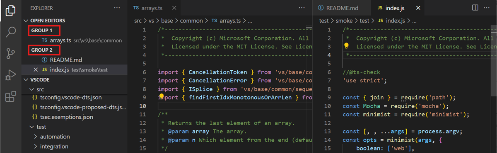
Command Palette

Quick Open Help

Quick Open Help
Personalize the look and feel
Preview themse from the Command Pallete
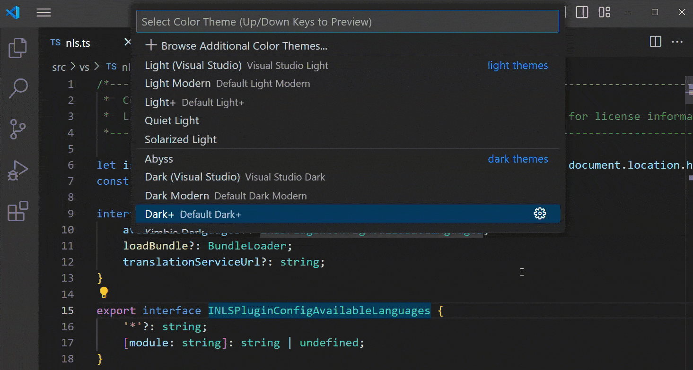
Set theme in settings
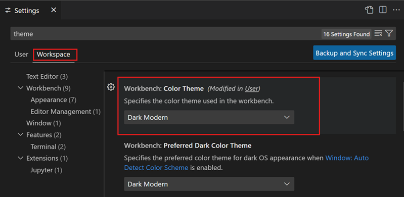
Screenshot of Settings editor to set a workspace-specific Color Theme.
Set your Font to ‘Fira Code’

font ligatures
Tips and Tricks
Use the tips and tricks in this article to jump right in and learn how to be productive with Visual Studio Code. Become familiar with the powerful editing, code intelligence, and source code control features and learn useful keyboard shortcuts. Make sure to explore the other in-depth topics in Getting Started and the User Guide to learn more.
Code Navigation
Visual Studio Code has a high productivity code editor which, when combined with programming language services, gives you the power of an IDE and the speed of a text editor. In this topic, we’ll first describe VS Code’s language intelligence features (suggestions, parameter hints, smart code navigation) and then show the power of the core text editor.
Quick file navigation
Tip: You can open any file by its name when you type ⌘P (Windows, Linux Ctrl+P) (Quick Open).
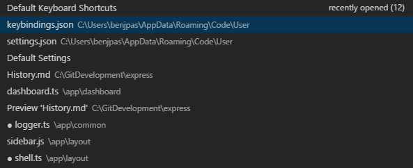
Breadcrumbs
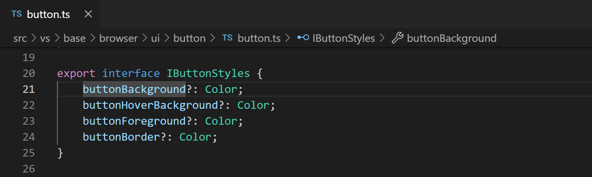
Breadcrumb folder dropdown
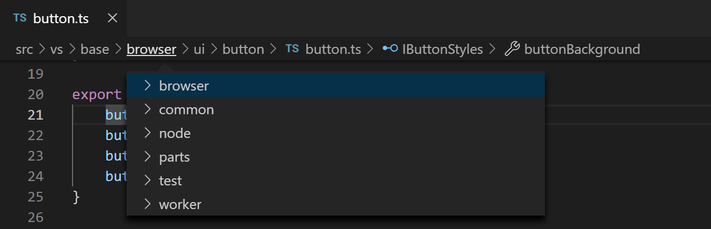
Breadcrumb symbol dropdown
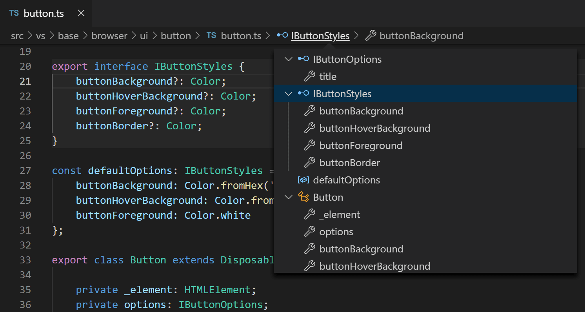
Go to Definition: Ctrl Hover
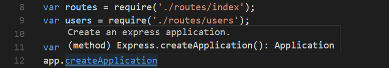
Go to Type Definition
Some languages also support jumping to the type definition of a symbol by running the Go to Type Definition command from either the editor context menu or the Command Palette. This will take you to the definition of the type of a symbol. The command editor.action.goToTypeDefinition is not bound to a keyboard shortcut by default but you can add your own custom keybinding.
Go to Implementation
Languages can also support jumping to the implementation of a symbol by pressing ⌘F12 (Windows, Linux Ctrl+F12). For an interface, this shows all the implementors of that interface and for abstract methods, this shows all concrete implementations of that method.
Go to Symbol
You can navigate symbols inside a file with ⇧⌘O (Windows, Linux Ctrl+Shift+O). By typing : the symbols will be grouped by category. Press Up or Down and navigate to the place you want.
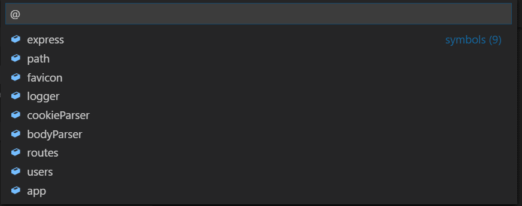
Go to Symbol
Open symbol by name
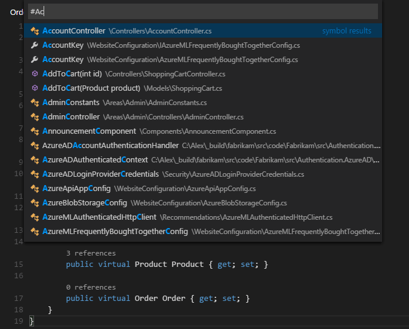
Rename symbol
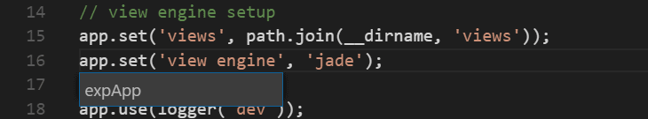
Basic editing
Visual Studio Code is an editor first and foremost, and includes the features you need for highly productive source code editing. This topic takes you through the basics of the editor and helps you get moving with your code.
Multiple selections (multi-cursor)
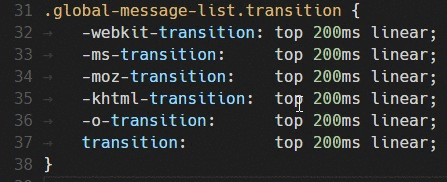
Multi-cursor next word
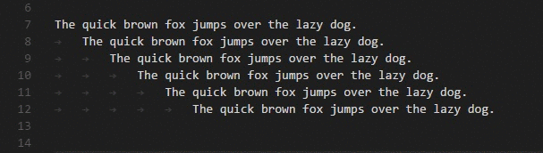
Find in selection
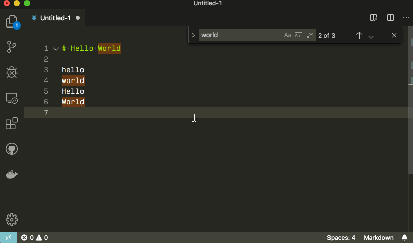
Advanced find and replace options
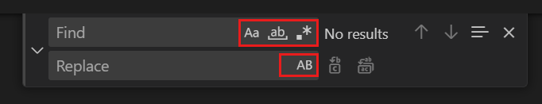
Search across files
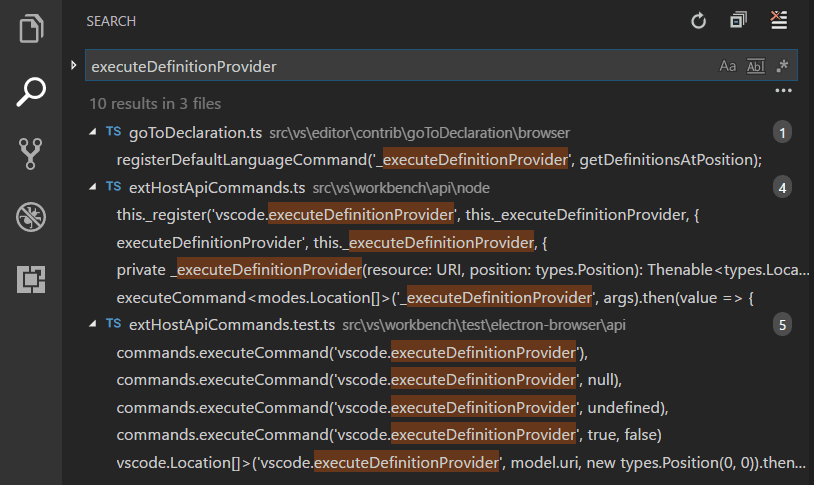
Advanced search options
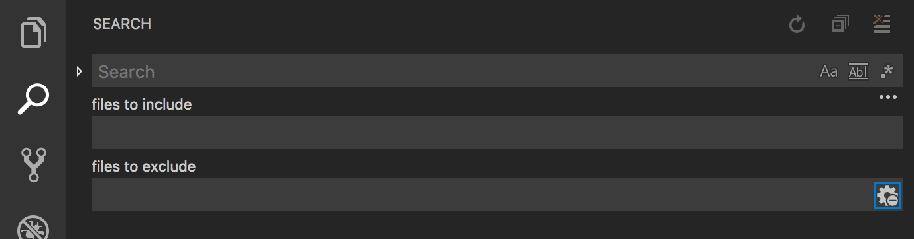
Search and replace
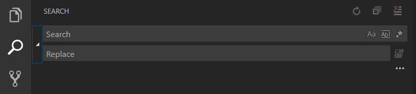
search and replace diff view
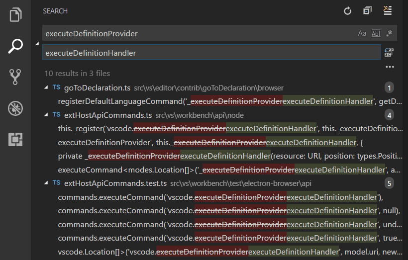
Code Snippets
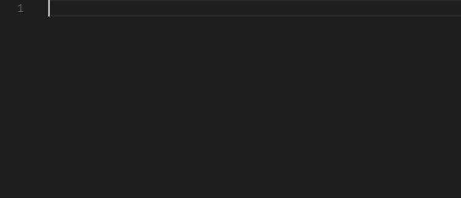
Built-in snippets
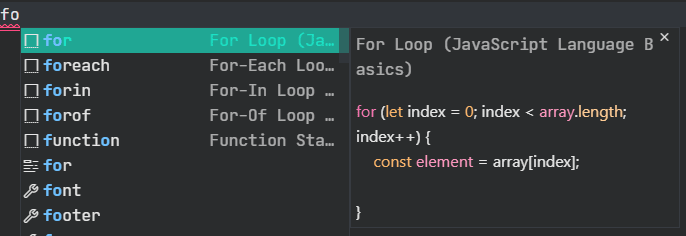
Install snippets from the Marketplace
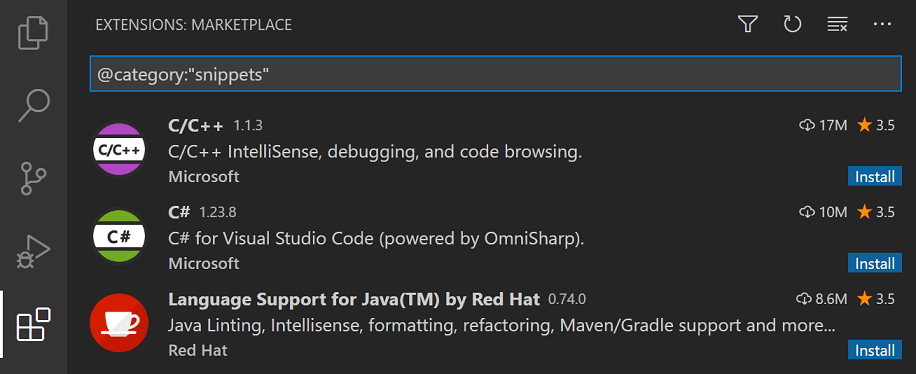
Create your own snippets
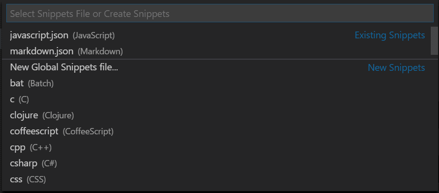
Terminal
Visual Studio Code includes a full featured integrated terminal that starts at the root of your workspace. It provides integration with the editor to support features like links and error detection. The integrated terminal can run commands such as mkdir and git just like a standalone terminal.